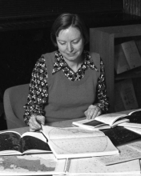

Please note: the AAS Obituaries are temporarily being hosted on this website while their full content is being ingested into the PubPub publishing platform newly adopted by the Bulletin of the American Astronomical Society. When the migration is complete, your existing links will take you to the final, migrated content. Contact peter.williams@aas.org with any questions.
Martha Locke Hazen (1931-2006)
Longtime Harvard Curator of Astronomical Photographs and AAVSO officer Martha Hazen passed away on 23 December 2006 at Hingham, Massachusetts, after a short illness due to acute myelogenous leukemia.
One of four children of Harold Locke and Katherine (neé Salisbury) Hazen, Martha was born in Cambridge, Massachusetts, on 15 July 1931, and raised in the Town of Belmont, near Cambridge, where she lived for most of her life. Her father coined the term "servo-mechanism" while serving as an engineering professor and dean for graduate students at the Massachusetts Institute of Technology. Her mother majored in chemistry at Mount Holyoke College.
After receiving an A.B. in astronomy from Mount Holyoke College in 1953, Martha earned a Ph.D. in astronomy in 1958 from the University of Michigan, defending a dissertation on the distribution of intensity in elliptical galaxies in the Virgo cluster. Martha's marriage to William Liller in 1959, and the births of two children, inevitably slowed down her progress in observational astronomy. As a research fellow of the Harvard College Observatory, Martha continued to observe two to three weeks a year in Chile, and to reduce those observations and publish the results for sixteen years.
Martha's first publication, at least as far as Astrophysics Data System includes the literature, was with Alice Farnsworth on the 1952 occultations of stars by the Moon, published in the Astronomical Journal (1953). In 1958 she joined L. R. Doherty and D. H. Menzel on a short note about the calculation of line profiles in a stratified atmosphere, her only theory paper.
Martha's most cited paper is "The Distribution of Intensity in Elliptical Galaxies of the Virgo Cluster," (ApJ, 132, p.306, 1960). There she acknowledges Allan Sandage for suggesting the problem and providing some of the data. Her second most cited paper is "Photometric histories of QSOs - Two QSOs with large light amplitude," (Liller, M. H. & Liller, W., ApJ (Letters), 199, p. L133-L135, 1975). Progressing to smaller objects, other frequently cited papers are on eta Carinae and spectroscopic binaries in the globular cluster M3. All of these, and most of her other papers, involve photographic photometry, mostly using archival data.
In 1969, Harvard appointed Martha Curator of Astronomical Photographs, placing her in responsible charge of the world renowned Harvard Plate Archives. Under attack during the mid-1950s because it occupied too much physical space, the collection had been neglected for over a decade when Martha assumed this additional responsibility. Though she continued to observe for a few years thereafter, her stewardship of the invaluable plate archives gradually demanded her full attention, which it held until her retirement in 2002.
In her thirty-three years as curator of the plate stacks, as the archive is popularly known, Martha made numerous friends in both the professional and amateur communities. Astronomical researchers on a wide variety of topics relied on her detailed knowledge of the collection to guide them to important discoveries or discovery confirmations on the old plates, and to historical understanding of results in which some detail of origin needed clarification. Martha researched and documented the characteristics of nearly a hundred separate telescopic cameras used to take the plates archived in the collection. Much of this information was ephemeral, having been passed orally from observer to observer and was in danger of passing from human memory. This was, in itself, an enormous and valuable undertaking as it ensures the utility of the plates for future research. More importantly, Martha conserved and catalogued the all important logbooks that record the date, time, and other exposure circumstances for each of the plates in the collection. The full measure of Martha's long-term contribution in this regard undoubtedly will be realized as the digitization of the entire collection of plates is completed. The Digital Access to a Sky Century from Harvard (DASCH) project will owe much to Martha's efforts in this regard.
Another important contribution to progress in astronomy from the plate stacks came as Martha engaged in what she called Forensic Astronomy. Over the years, a great many variable stars that had been discovered on the Harvard plates had since been "lost," i. e. could not be found or verified. At the request of Nikolai Samus, General Editor of the General Catalogue of Variable Stars (GCVS), Martha found the original discovery plates on these stars together with sufficient relevant information from other sources, and was successful in re-establishing credible identifications and accurate coordinates for 1,174 of the nearly 1,200 "lost" variable stars on the GCVS list. This required looking at multiple plates of the field involved to sort out whether the problem was an erroneous identification, inappropriate coordinates for the star, or some other problem. Many astronomers, professional and amateur, have relied on Martha to teach them the now arcane skills of photovisual photometry using a time series of plates and a "fly swatter" to discover variable stars, confirm a period or period change, or simply to construct a historical light curve to fit with modern observations.
The range of co-authors on Martha's many publications illustrates how useful her chosen specialization was to the field. She served as a portal to otherwise difficult-to-access but very valuable (and irreplaceable) data, particularly the Harvard Plate Collection.
In the 1970s, when interest in improving the status of women in astronomy arose, along with the desire to recruit more women into astronomy, Martha was appointed as Harvard College Observatory's representative to a university-wide coordination committee on the status of women in university life generally. Working with Ursula Marvin, who had similar responsibilities for the Smithsonian Astrophysical Observatory, Martha played a leadership role in the field for several years, helping to organize the first Space for Women conference in 1975.
Martha's long term support for the American Association of Variable Star Observers (AAVSO) was a natural consequence of her earlier work as an observational astronomer as well as curator of the plate stacks. She joined AAVSO in 1975, and was first elected to the Council in 1984, became a vice president, and eventually became president in 1992. When long-term AAVSO secretary Clinton Banker Ford (obituary, BAAS, 26, p. 1602-1603, 1994) passed away in February 1993, Martha was elected secretary to replace Ford, and served in that capacity for over ten years. Her services to AAVSO went well beyond those years in elective offices, however, and cannot be fully understood only in those terms. Martha also served a vital role as a friend and mentor for Janet Akyüz Mattei ((obituary, BAAS, 36, p. 1681-1682, 2004) throughout the latter's tenure as the director of AAVSO. The proximity of the plate stacks and AAVSO offices made it convenient for them to spend frequent lunch hours together, almost invariably discussing problems in administering the AAVSO. Both the authors of this obituary can testify, as former AAVSO presidents, to the importance of Martha's support and advice for Janet, and to the importance of her role behind the scenes in AAVSO activities for many years. AAVSO honored Martha for this service by presenting her their 37th Merit Award.
After her first marriage ended in divorce in 1982, Martha married Bruce McHenry, a retired career professional from the National Park Service, in 1991. That their relationship was a happy and fulfilling one is attested by the many friends Bruce made among Martha's astronomical associates. Their extensive travel together frequently involved Bruce's continuing professional interest in natural-history interpretation, but also touched many astronomical bases. Their travels also took the happy couple to the sites of many old canals, an interest they shared, as well as to quilting exhibitions, another of Martha's many interests. Martha's life long contributions to astronomy were recognized by Smithsonian Astrophysical Observatory colleagues through the naming of an asteroid, (10024) Marthahazen in her honor. She is survived by Bruce; three siblings, Stanley Hazen, Nathen Hazen, and Anne Bowen; her son, John Liller and daughter, Hilary Ward; and five grandchildren.
Obituary written by: Thomas R. Williams (AAVSO), Lee Anne Willson (Iowa State Universtiy)
BAAS Citation: BAAS, 2007, 39, 1064
SAO/NASA ADS Bibcode: 2007BAAS...39.1064W